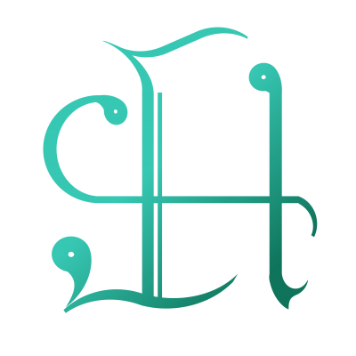

- 人工言語知識情報・情報技術事業体
-

-

-

-

-

組織・スタッフ - Organs & Staffs
組織・部門 - Organs & Units
CL-KIITA 人工言語知識情報・情報技術事業体を構成する機構を紹介します。
事業統括部 - The Head Office of Management CL-KIITA全体を統括する。 統括執行系統 - Division of Executive Authorities コードの割当や標準の勧告、情報基盤の運用などを担う。 コード割当総部 - Code Assignment Authority 人工言語コードであるCLAコードや、人工文字体系コード、符号化文字コードの割当を担う。 標準・文書化総部 - Commission of Standard and Documentation CLaKIS標準の起草・勧告を担うほか、Migdal Wiki、Conlang Portalなどの情報基盤の運用を兼務する。 研究開発系統 - Division of Research & Development 人工言語の知識情報体系の研究・構成や、人工言語のための情報システムの研究・開発を担う。 各種コード類部門 - Various Codes Unit 人工言語コード、人工文字体系コード、符号化文字コード、フォントなどを扱う。 言語知識集積部門 - Language Knowledge Accumulation Unit りんご文、規範文典、言語分類、記述形式、形式文法などを扱う。 辞書システム部門 - Dictionary Systems Unit ZpDIC、DDC(Dictionary Data Cloud)などの辞書システムや、OTM-JSON、NPDD形式などの辞書形式を扱う。 交流システム部門 - Social Systems Unit Migdal SNSなどの社会ネットワーク交流システムを扱う。 支援システム部門 - Support Systems Unit Zatlin、CroisterdReactなどの制作支援システムを扱う。 標準規格部門 - Standard & Specifications Unit CLaKIS、BERNなどの標準規格・情報資源組織系を扱う。 総務管理系統 - The Division of General Management 庶務、経理、調達、渉外などの総務事務を担う。
組織図
CL-KIITA：人工言語知識情報・情報技術事業体
CL-KIITA：人工言語知識情報・情報技術事業体
- 事業統括部：The Head Office of Management
- 事業代表：Director Chief (of Association)
- 事業主任：General Chief (of Association)
- その他：Others
- 統括執行系統：Division of Executive Authorities
- コード割当総部：Code Assignment Authority
- 標準・文書化総部：Commission of Standard and Documentation
- 研究開発系統：Division of Research & Development
- 各種コード類部門：Various Codes Unit
- 言語知識集積部門：Language Knowledge Accumulation Unit
- 辞書システム部門：Dictionary Systems Unit
- 交流システム部門：Social Systems Unit
- 支援システム部門：Support Systems Unit
- 標準規格部門：Standard & Specifications Unit
- 総務管理系統：Division of General Management
スタッフの区分
| 全体統括 | 中核スタッフ | |||
|---|---|---|---|---|
| 中間統括 | 常務スタッフ | |||
| 各分野 | 知識スタッフ | 技術スタッフ | 事務スタッフ | イベントスタッフ |
- 中核スタッフ
- 常務スタッフ
- 知識スタッフ
- 技術スタッフ
- 事務スタッフ
- イベントスタッフ
事業統括部 - The Head Office of Management CL-KIITA全体を統括する。 統括執行系統 - Division of Executive Authorities コードの割当や標準の勧告、情報基盤の運用などを担う。 コード割当総部 - Code Assignment Authority 人工言語コードであるCLAコードや、人工文字体系コード、符号化文字コードの割当を担う。 標準・文書化総部 - Commission of Standard and Documentation CLaKIS標準の起草・勧告を担うほか、Migdal Wiki、Conlang Portalなどの情報基盤の運用を兼務する。 研究開発系統 - Division of Research & Development 人工言語の知識情報体系の研究・構成や、人工言語のための情報システムの研究・開発を担う。 各種コード類部門 - Various Codes Unit 人工言語コード、人工文字体系コード、符号化文字コード、フォントなどを扱う。 言語知識集積部門 - Language Knowledge Accumulation Unit りんご文、規範文典、言語分類、記述形式、形式文法などを扱う。 辞書システム部門 - Dictionary Systems Unit ZpDIC、DDC(Dictionary Data Cloud)などの辞書システムや、OTM-JSON、NPDD形式などの辞書形式を扱う。 交流システム部門 - Social Systems Unit Migdal SNSなどの社会ネットワーク交流システムを扱う。 支援システム部門 - Support Systems Unit Zatlin、CroisterdReactなどの制作支援システムを扱う。 標準規格部門 - Standard & Specifications Unit CLaKIS、BERNなどの標準規格・情報資源組織系を扱う。 総務管理系統 - The Division of General Management 庶務、経理、調達、渉外などの総務事務を担う。
スタッフ - Staffs
CL-KIITA を支える主なスタッフ陣を紹介します。
事業統括部 - The Head Office of Management
統括執行系統 - Division of Executive Authorities
コード割当総部 - Code Assignment Authority
標準・文書化総部 - Commission of Standard and Documentation
研究開発系統 - Division of Research & Development
各種コード類部門 - Various Codes Unit
言語知識集積部門 - Language Knowledge Accumulation Unit
辞書システム部門 - Dictionary Systems Unit
交流システム部門 - Social Systems Unit
支援システム部門 - Support Systems Unit
標準規格部門 - Standard & Specifications Unit
総務管理系統 - The Division of General Management

佐藤陽花
事業代表, 事業主任
事業代表, 事業主任
代表発起人。CLAコード (v2, v3) や CLaKIS の発案者で、「ILdics〈統合辞書システム〉」 や NPDD 形式の研究開発を行っている。